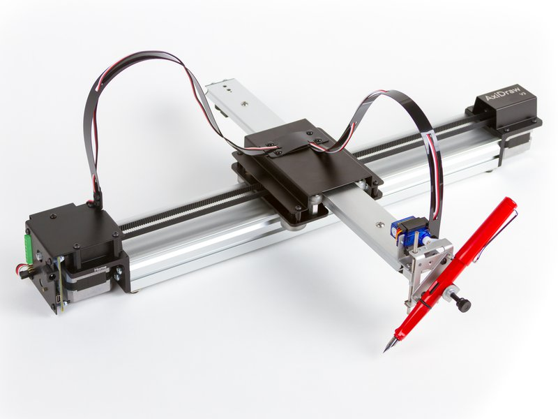

#plottertwitter, #generative
Elm
➡
SVG
➡
Javascript
➡

Pen Plotter
demystify creative coding for functional programmers
I. Random grid
II. Shepherding random numbers
III. L-Systems
How to draw a grid of lines, with random rotations
Please 🐻 with me. This will be code heavy.
Full code example is link in the slide at the end.
Making a grid
import List.Extra exposing (initialize, andThen)
makeGrid : Int -> Int -> List ( Float, Float )
makeGrid m n =
initialize m toFloat
|> andThen (\x -> initialize n toFloat
|> andThen (\y -> [ ( x, y ) ]))
Recipe taken from Elm-Packages : List.Extra
> initialize 2 toFloat
[0,1] : List Float
> makeGrid 2 2
[(0,0),(0,1),(1,0),(1,1)] : List ( Float, Float )
Drawing a line
import Svg
import Svg.Attributes as Attributes
line : Float -> Float -> Float -> Float -> Svg msg
line x1 y1 x2 y2 =
Svg.line
[ Attributes.x1 <| toString x1
, Attributes.y1 <| toString y1
, Attributes.x2 <| toString x2
, Attributes.y2 <| toString y2
]
[]
Generating random rotations
Generating random rotations
The program structure we are about to plumb
type Model
= Setup ...
| Model ... (...)
type Msg
= Generate
| Draw (...)
init = update Generate (Setup ...)
update msg model =
case ( msg, model ) of
( Generate, Setup ... ) ->
-- | Tell Elm to populate random numbers into Draw
( Draw, Setup ... ) ->
-- | Create our Model for rendering
view (Model ...) =
List.mapN drawFunction initialShape randomValues
1. Define our own generator & model
type Model
= Setup Int Int -- | Grid (m x n) in size
| Model Int Int (List Float) -- | Mix in random values
type Msg
= Generate
| Draw (List Float)
init : ( Model, Cmd Msg )
init =
update Generate (Setup 16 16)
2. Random generation
import Random exposing (Generator)
random : Generator Float
random =
Random.float -0.5 0.5 -- | Generate a value between -0.5 and 0.5
randomList : Int -> Generator (List Float)
randomList n =
Random.list n random
update : Msg -> Model -> ( Model, Cmd Msg ) -- | Calls `view` each time
update msg model =
case ( msg, model ) of
( Generate, Setup m n ) ) ->
( model, Random.generate Draw <| randomList (m * n) )
( Draw rs, Setup m n ) ->
( Model m n rs, Cmd.none )
_ ->
( model, Cmd.none )
3. Drawing our grid of lines, with random rotations
view : Model -> Svg Msg
view (Model m n rs) =
let
flip r = if r > 0 then 0 else 90
in
List.map3
(\( dx, dy ) (( x1, y1 ), ( x2, y2 )) r ->
Svg.g
[ Svg.Attributes.transform <|
(" translate(" ++ toString dx ++ "," ++ toString dy ++ ") ")
++ " rotate(" ++ toString (flip r) ++ ") "
]
[ line x1 y1 x2 y2 ]
)
(makeGrid m n)
(List.repeat (m * n) ( ( -0.5, -0.5 ), ( 0.5, 0.5 ) ))
rs
I. Random grid
II. Shepherding random numbers
III. L-Systems
Shepherding random numbers
Creating the illusion of order out of pure randomness.
- Generate a list of random values between -0.5 and 0.5.
e.g. A = [ 0.3, 0.5, -0.4, -0.2, 0.7 ] - Accumulate each random value into a new list.
e.g. B = [ 0.3, 0.8, 0.4, 0.2, 0.9 ] - Add both lists to some starting values.
e.g. C = [ 0, 1, 2, 3, 4 ] + A + B = [ 0.6, 2.3, 2.0, 3.0, 5.6 ]
Shepherding values in practice
type Model =
Setup Int | Model Int Curtain
type Curtain =
Curtain (List (List Float)) (List (List Float))
view : Model -> Svg Msg
view (Model n (Curtain a b)) =
Svg.g
[]
-- | creates `List (List (Float, Float))` with 100 segments each.
(initialiseLines 100
-- | Add random and shepherded random values to each list of points
|> List.map2 (map2First (+)) a
|> List.map2 (map2First (+)) (accumulateList a)
|> List.map2 (map2First (+)) b
|> List.map2 (map2Second (+)) (accumulateList b)
-- | Draw each line
|> List.map lines
)
I. Random grid
II. Shepherding random numbers
III. L-Systems
L-System is a rewriting ruleset
Trivia: it was originally created to simulate plants in nature.
🐢 The Turtle Graphics L-System 🐢
- D: Draw forward 1 step
- S: Skip forward 1 step without drawing
- L: Turn left
- R: Turn right
Exmaple taken from The Algorithm Beauty of Plants
🐢 Example: Rectangles
Starting point: (0, 0), angle: 0° (->)
Starting state: DRDRDRD
Apply this ruleset
Starting state: DRDRDRD
Rule: D -> DDRDLDRDRDD